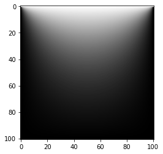
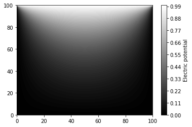

import numpy as np
import matplotlib.pyplot as pltRelaxation method
The method of finite differences is often used to solve partial differential equations
Consider the two-dimensional Laplace equation for the electric potential \(\phi\) subject to appropriate boundary conditions:
\[\begin{equation} \frac{\partial^2\phi}{\partial x^2} + \frac{\partial^2\phi}{\partial y^2} = 0 \end{equation}\]
Real physical problems are in three dimensions, but we can more easily visualise the method of finite differences - and the extension to three dimensions is straight forward.
The method of finite differences, which has already been introduced earlier in the course, involves dividing the space into a grid of discrete points \([x,y]\) and calculating numerical derivatives or at each of these points.
In this case we consider a 2-dimensional sheet with a fixed voltage \(V\) at the top side, and all other sides fixed at \(0V\).
As a quick recap from what was learnt earlier in the course, we can express the Laplacian in two dimensions using finite differences:
\[\begin{equation} \frac{\partial ^2f}{\partial x^2} + \frac{\partial ^2f}{\partial y^2} \simeq \frac{f(x+h,y)+f(x-h,y)+f(x,y+h)+f(x,y-h)-4f(x,y)}{h^2}, \end{equation}\]
The expression above is known as a five-point stencil as it uses five points to calculate the Laplacian.
The finite difference method turns our partial differential equation into a set of linear simulatenous equation
Returning to our Laplace equation for for the electric potential \(\phi\):
\[\begin{equation} \frac{\partial^2\phi}{\partial x^2} + \frac{\partial^2\phi}{\partial y^2} = 0 \end{equation}\]
The numerical Laplacian can be substituted into the equation above, giving us a set of \(n\) simulatenous equations for the \(n\) grid points.
\[\begin{equation} \frac{\phi(x+h,y)+\phi(x-h,y)+\phi(x,y+h)+\phi(x,y-h)-4\phi(x,y)}{h^2} = 0, \end{equation}\]
where \(h\) is the distance between each grid point.
To solve this set of equations we use the relaxation method
To calculate \(\phi(x,y)\) we use the relaxation method, also known as the Jacobi method in the context of the Laplace equation. First we re-arrange the equation above:
\[\begin{equation} \phi(x,y)=\frac{1}{4}\left(\phi(x+h,y)+\phi(x-h,y)+\phi(x,y+h)+\phi(x,y-h)\right). \end{equation}\]
Note that because we set the Laplacian equal to zero in Equation 3 (for this particular example), the \(h^2\) term has dropped out of the expression - this might not be the case for other examples.
This tells us that \(\phi(x,y)\) is the average of the surrounding grid points, which can be represented visually as:

Second, we fix \(\phi(x,y)\) at the boundaries using the boundary conditions. Third, we guess the initial values of the interior \(\phi(x,y)\) points - our guesses do not need to be good, and can be zero.
Finally we use Equation 4 to calculate new values of \(\phi'(x,y)\) at all points in space. We take these new \(\phi'(x,y)\) values and feed them into Equation 4 again to calculate new values. We repeat this iterative process until the \(\phi(x,y)\) values converge, and that is our solution.
Convergence can be tested by specifying what the maximum difference should be between iterations. For example, that \(\phi'(x,y)-\phi(x,y)< 1e-5\) for all grid points.
The relaxation method is limited by the accuracy of the finite difference method
- For solving PDEs we use the finite difference method (as part of the relaxation method).
- Even if we use a very small target accuracy for convergence of the relaxation method, our accuracy will still be limited by the finite differences. Higher-order finite difference methods (such as the 5-point or 7-point methods) can be used here to improve the overrall accuracy of the calculation.
The relaxation methods can be applied using the Python skills we have developed
We will now use our Python Skillz to solve Laplace’s equation with the boundary conditions outlined above. Let’s also imagine that the sheet is 1m along each side and that we want a grid spacing of 1cm. First let’s import the libraries we will use:
Now let’s specify our simulation parameters…
grid_width = 101 # number of grid points for width of simulation
grid_height = 101 # number of grid points for height of simulation
target = 1e-6 # target accuracy to complete convergence…and our boundary conditions:
V_top = 1.0 # top wall voltage, in volts
V_left = 0.0 # left wall voltage
V_right = 0.0 # right wall voltage
V_bottom = 0.0 # bottom wall voltageNext let’s create a NumPy array to hold our \(\phi(x,y)\) and \(\phi'(x,y)\) values:
phi = np.zeros([grid_height,grid_width], float)
phi_prime = np.empty([grid_height,grid_width], float)Now we apply the boundary conditions to our array:
phi[0,:] = V_topNow we write a function which uses the finite difference method to calculate an updated \(\phi'(x,y)\) .
def finite_difference(phi):
for i in range(grid_height): # for each grid point
for j in range(grid_width):
if i==0 or i==grid_height-1 or j==0 or j==grid_width-1:
phi_prime[i,j] = phi[i,j] # if at boundary, keep fixed
else: # otherwise apply finite difference
phi_prime[i,j] = (phi[i+1,j]+phi[i-1,j]+phi[i,j+1]+phi[i,j-1]) / 4
return phi_primeFinally let’s use the relaxation method. We repeatedly call the function finite_difference until all values of \(\phi(x,y)\) are converged.
delta = 1.0 # create delta. It can take any value larger than the target accuracy
while delta > 1e-6: # keep running the following code until delta < 1e-6
phi_prime = finite_difference(phi) # calculate phi_prime
delta = np.max(np.abs(phi-phi_prime)) # calculate the maximum difference between phi and phi_prime
phi,phi_prime = phi_prime,phi # Swap phi and phi-prime, ready for the next iterationWe can visualise our result using the function matplotlib.pyplot.imshow which displays our data as an image:
plt.imshow(phi_prime)<matplotlib.image.AxesImage at 0x7ffd66d69e10>
This result makes sense: there is a region of high electric potential around the top side of the sheet, where the voltage is fixed at 1V, and regions of low potential around the other three walls. If we would like a colour bar to indicate the \(\phi(x,y)\) values across the image then we can use the function matplotlib.pyplot.contourf to produce a filled contour plot. Note that this function flips our image (plotting the values held in the array from left to right, top to bottom) so we use numpy.flip to achieve the expected result.
plt.contourf(np.flip(phi_prime),levels=np.linspace(0,1,101))
plt.colorbar().set_label("Electric potential")